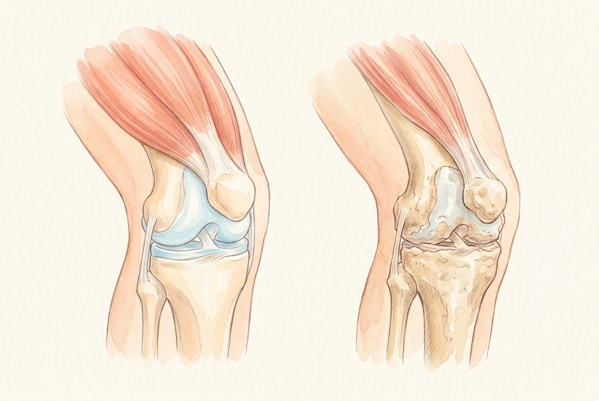
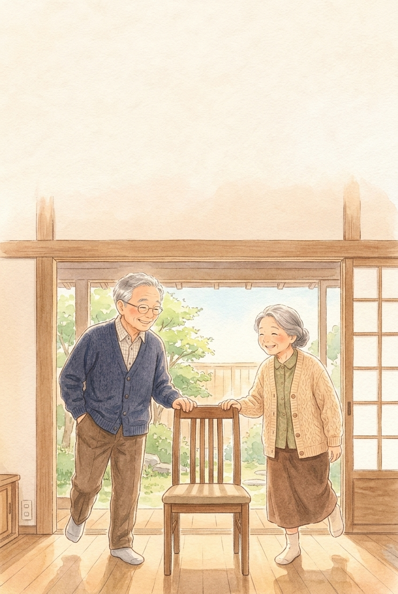
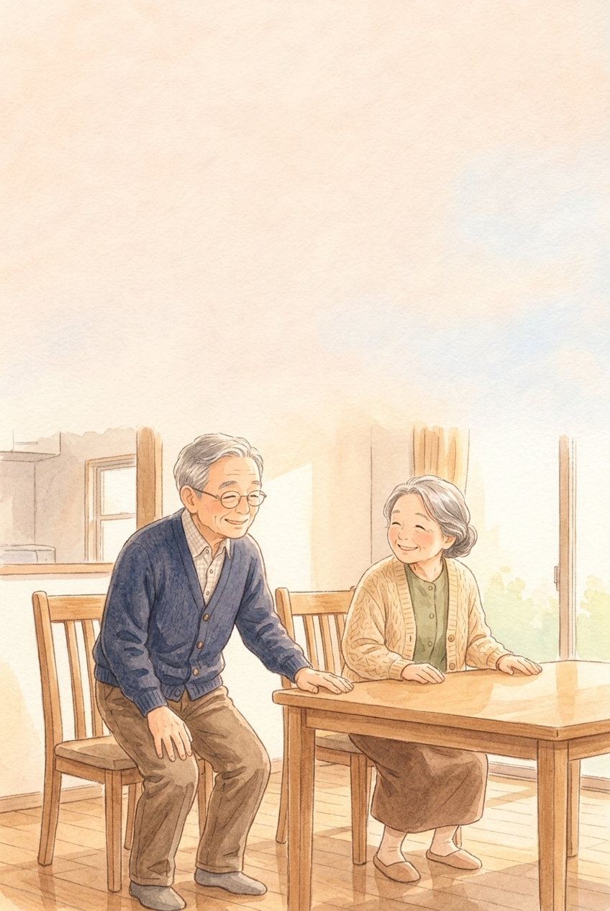
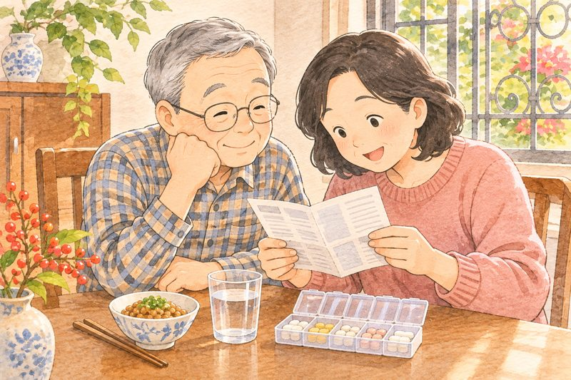

Gân cốt dẻo daingười Nhật giữ đôi chân thế nào?
Ở Nhật có một từ ai cũng biết: “Locomo” — hội chứng đôi chân yếu dần. Người Nhật giữ khớp gối, cơ đùi và thăng bằng bằng những bài tập nhỏ ngay bên bàn ăn.
Mục lục
Bấm vào chương để đọc.

Đôi chân khỏe
tuổi già tự chủ
Hội chứng vận động “Locomo” là gì?
rokomotibu shindorōmu
Ở Nhật, ngã gãy xương và đau yếu khớp là lý do lớn thứ hai khiến người già phải nằm một chỗ, chỉ sau đột quỵ.
Những con số đáng nhớ
người từ 40 tuổi trở lên có dấu hiệu suy giảm vận động Locomo
người cao tuổi cần chăm sóc dài hạn là do té ngã, gãy xương và bệnh khớp
mức hao hụt cơ đùi mỗi năm nếu ngồi nhiều, ít vận động
người trên 60 tuổi có biểu hiện thoái hóa khớp, hay gặp nhất ở khớp gối

Năm 2007, Hiệp hội Chỉnh hình Nhật Bản đặt tên cho tình trạng xương, khớp, cơ yếu dần là Locomo để ai cũng biết cách giữ chân sớm.
Nguồn: Hiệp hội Chỉnh hình Nhật Bản (JOA), sáng kiến phòng Locomo từ 2007; Điều tra đời sống quốc dân Nhật Bản 2022; thống kê Hội Thấp khớp học Việt Nam.
Bước chân của ông bà Sato
 Mình tập chân 15 phút nhé!
Cơ đùi ấm hẳn lên bà ạ!
Đầu gối êm, không mỏi!
Chân khỏe đi đâu cũng vui!
Mình tập chân 15 phút nhé!
Cơ đùi ấm hẳn lên bà ạ!
Đầu gối êm, không mỏi!
Chân khỏe đi đâu cũng vui!
Chân yếu không đến trong một đêm, mà bắt đầu từ những ngày ngại đứng dậy.
Cơ đùi là bộ giảm xóc của khớp gối
Đầu gối không đứng một mình. Khớp gối bền hay mau mòn phụ thuộc rất lớn vào khối cơ đùi phía trên nâng đỡ nó.

Cơ đùi săn: sụn gối êm Cơ đùi yếu: sụn cọ mòn- Cơ đùi gánh lực: cơ tứ đầu đùi khỏe giúp hấp thụ tới 40% lực dội xuống khớp gối mỗi khi bước đi hay xuống bậc thềm.
- Sụn sống nhờ co duỗi: sụn khớp không có mạch máu nuôi trực tiếp, chỉ hút dịch khớp khi chân co duỗi nhẹ nhàng.
- Vòng xoắn ngồi yên: thấy mỏi gối → sợ đau ngồi yên → cơ đùi teo nhỏ → khớp gối càng đau hơn.
Nguồn: Hiệp hội Chỉnh hình Nhật Bản (JOA), Cẩm nang Locomo cho người dân.
Đau gối thì phải nằm yên?

Nhiều cô chú vì thương cái đầu gối mà kiêng đi lại hoàn toàn. Cùng soát lại xem điều nào đúng.
Đau mỏi gối thì nằm nghỉ hẳn
Trừ lúc đang sưng nóng cấp tính, còn lại cần tập cơ đùi nhẹ trên ghế mỗi ngày
Già rồi ai chẳng còng lưng, yếu chân
Cơ bắp tuổi 70–80 vẫn dày lên được nếu tập đúng và ăn đủ đạm
Chỉ cần uống thật nhiều canxi
Canxi cần Vitamin D, K2 và lực nén nhẹ từ vận động mới gắn vào xương
Đi bộ leo dốc thật nhiều cho dẻo khớp
Đang thoái hóa gối nên đi đường bằng, tránh leo dốc và cầu thang cao
Nguồn: Hội Chỉnh hình Nhật Bản (JOA); Hướng dẫn vận động cho người cao tuổi của Bộ Y tế Nhật Bản.
7 câu tự kiểm Locomo của Nhật

Bấm vào những câu đúng với bố mẹ hoặc chính mình trong 1 tháng qua:
Nguồn: Bảng “7 Loco-Check” chính thức của Hiệp hội Chỉnh hình Nhật Bản (JOA). Chỉ cần 1 câu đúng là tín hiệu nên bắt đầu tập giữ cơ – xương.

Đứng một chân
1 phút
Bài tập Chim Hồng Hạc của người Nhật
furamingo taisō
Một phút đứng một chân mở mắt tác động lên cổ xương đùi tương đương 53 phút đi bộ.
Bài tập Chim Hồng Hạc bên bàn ăn
Năm 1993, bác sĩ chỉnh hình Sakamoto Keizo (Đại học Showa) giới thiệu bài tập đứng một chân mở mắt (Flamingo) để phòng gãy cổ xương đùi cho người lớn tuổi Nhật:
- Mắt
Luôn mở mắt nhìn thẳng phía trước. Tuyệt đối không nhắm mắt để tránh chóng mặt té ngã.
- Tay
Đứng cạnh bàn ăn hoặc lưng ghế chắc chắn, một tay chạm nhẹ để sẵn sàng vịn ngay khi người hơi nghiêng.
- Chân
Nhấc một bàn chân khỏi sàn chỉ khoảng 5 cm, giữ 1 phút cho chân trái rồi đổi 1 phút cho chân phải.

Sáng – trưa – tối mỗi bữa 1 lần. Vừa chờ ấm nước sôi hay xem thời sự là tập xong!
Nguồn: Sakamoto K., Đại học Showa; Hiệp hội Chỉnh hình Nhật Bản (JOA), bài tập Loco-Tre số 1 (Đứng một chân có điểm tựa).
Ông Sato thử làm Hồng Hạc
 Chân tôi vững lắm, lo gì!
Ông vịn ghế đứng 1 chân xem!
Ơ… mới 10 giây đã rung!
Tập mỗi sáng, vững hẳn ông ạ!
Chân tôi vững lắm, lo gì!
Ông vịn ghế đứng 1 chân xem!
Ơ… mới 10 giây đã rung!
Tập mỗi sáng, vững hẳn ông ạ!
Thăng bằng giống như đi xe đạp: ngày nào cũng nhắc cơ thể một chút thì đôi chân không quên.
Vì sao 1 phút bằng 53 phút đi bộ?
Cổ xương đùi (chỗ khớp háng) là nơi dễ gãy nhất khi người già trượt ngã. Đứng một chân đặt một lực nén vừa vặn lên đúng vùng xương này.
 Kích thích tạo xương hông
Rèn phản xạ chống vấp ngã
Kích thích tạo xương hông
Rèn phản xạ chống vấp ngã
- Gấp 2,75 lần: khi đứng trên một chân, cổ xương đùi bên trụ chịu tải trọng gấp 2,75 lần so với đứng hai chân, tương đương 53 phút đi bộ.
- Không làm mòn gối: vì chân đứng yên không co sát liên tục, bài tập này làm chắc xương hông mà rất êm cho người đau gối.
- Đánh thức tiểu não: hàng chục cơ nhỏ quanh cổ chân và hông tự điều chỉnh liên tục, giúp khi vấp ngoài đời thật chân tự lấy lại thăng bằng.
Nguồn: nghiên cứu mật độ xương cổ xương đùi với bài tập Dynamic Flamingo của GS. Sakamoto Keizo, Nhật Bản.

Nhắm mắt đứng mới giỏi?
Tập thăng bằng cho người trên 50 tuổi cần nhất là an toàn tuyệt đối, không để ngã lúc tập.
Tưởng vậy
- Nhắm mắt đứng một chân mới tài
- Co đầu gối thật cao lên tận bụng
- Bỏ cả hai tay ra không thèm vịn
- Cố gồng đứng liền 5 phút
Thật ra
- Bắt buộc mở mắt nhìn thẳng
- Nhấc bàn chân cách sàn 5 cm là đủ
- Luôn đứng sát bàn/tường để chạm tay
- Mỗi chân 1 phút, chia 3 lần/ngày
Nguồn: khuyến cáo an toàn Loco-Tre của Hiệp hội Chỉnh hình Nhật Bản (JOA).
4 bước đứng Hồng Hạc an toàn
Chưa vững thì chạm cả bàn tay lên mặt bàn; quen rồi thì chạm nhẹ một ngón tay:
Chọn bàn ăn hoặc tường vững, không vịn ghế có bánh xe
Nhìn một điểm ngang tầm mắt, hai vai thả lỏng
Không để chân nhấc chạm vào bắp chân đang đứng trụ
Mỗi bên 1 phút × 3 lần sáng, trưa, chiều
Làm ngay
- Đi chân trần trên sàn khô hoặc đi giày đế phẳng
- Mệt ở giây thứ 20 thì hạ chân nghỉ rồi nhấc tiếp cho đủ 60 giây
Đừng làm
- Đi tất len trơn trên nền gạch bông
- Đứng trên tấm thảm chùi chân dễ xê dịch
- Nín thở khi đang giữ thăng bằng
Nguồn: Hiệp hội Chỉnh hình Nhật Bản (JOA), hướng dẫn tập Dynamic Flamingo tại nhà.
Bấm giờ Hồng Hạc 60 giây
Theo chuẩn kiểm tra thể lực người cao tuổi của Bộ Giáo dục & Thể thao Nhật Bản: mở mắt đứng 1 chân từ 20 giây trở lên (tuổi 65–74) là thăng bằng tốt; dưới 15 giây có nguy cơ dễ vấp ngã.

Hạ gối chậm
bên ghế ăn
Bài tập số 2 giữ cơ đùi không teo
roko tore · sukowatto
Muốn đầu gối bớt đau khi đi lại, cách tốt nhất là làm khỏe cơ đùi trước ngay trên chiếc ghế ăn cơm.
Hai bài tập quốc dân “Loco-Tre”
- Vì sao chỉ 2 bài?
Các giáo sư chỉnh hình Nhật thấy rằng bài tập càng nhiều động tác thì người lớn tuổi càng nhanh bỏ cuộc.
- Chậm 4 giây
Thay vì đứng lên ngồi xuống thật nhanh làm dội khớp gối, người Nhật hạ mông chậm trong 4–5 giây rồi đứng lên chậm 4 giây.
- Chỉ 5–6 nhịp
Mỗi lần chỉ cần 5–6 nhịp sau bữa sáng, trưa, tối. Hơi mỏi đùi trước mà đầu gối không nhói là đúng chuẩn.
Đặt sẵn chiếc ghế ngay phía sau mông: mỏi lúc nào là ngồi xuống ghế luôn, chẳng sợ ngã!
Nguồn: Hiệp hội Chỉnh hình Nhật Bản (JOA), phác đồ 2 bài tập quốc dân Locomotion Training (Loco-Tre).
Ông Sato hết ngại đứng dậy
 Đứng lên mỏi gối quá bà ơi…
Tập hạ gối chậm 5 nhịp nhé!
Ra vườn đứng lên nhẹ hẳn!
Chân khỏe chăm cây vui quá!
Đứng lên mỏi gối quá bà ơi…
Tập hạ gối chậm 5 nhịp nhé!
Ra vườn đứng lên nhẹ hẳn!
Chân khỏe chăm cây vui quá!
Ngồi lì một chỗ làm khớp gối khô cứng; vận động chậm rãi lại làm khớp trơn tru.
Đúng tư thế: lợi cơ mà êm khớp
Cùng là động tác khuỵu gối, nhưng đẩy hông ra sau khác hẳn với đẩy nhọn đầu gối về trước.
 Đẩy hông ra sau như sắp ngồi ghế
Đầu gối không vượt quá mũi chân
Đẩy hông ra sau như sắp ngồi ghế
Đầu gối không vượt quá mũi chân
- Lực vào cơ đùi, không vào bánh chè: khi lùi hông ra sau như sắp ngồi xuống ghế, toàn bộ cơ đùi trước và cơ mông gánh lực thay cho sụn bánh chè.
- Vừa thở vừa đếm “1, 2, 3, 4”: vừa hạ xuống vừa đếm thành tiếng giúp ông bà không bị nín thở làm tăng huyết áp.
- Nếu đau gối: chỉ cần ngồi trên ghế, duỗi thẳng một chân ra trước, giữ 5 giây rồi hạ xuống (10 lần mỗi bên).
Nguồn: Hiệp hội Chỉnh hình Nhật Bản (JOA), hướng dẫn Squat an toàn cho người cao tuổi.

Xoay gối răng rắc, ngồi xổm nhặt rau?
Hai thói quen rất hay gặp ở Việt Nam lại làm sụn chêm đầu gối mau rách và mòn nhất.
Tránh làm
- Đứng chụm chân xoay tròn hai đầu gối
- Ngồi xổm nhặt rau, giặt đồ dưới đất
- Ngồi bệt khoanh chân dưới sàn lâu
Nên làm
- Ngồi ghế đá nhẹ cẳng chân lên xuống
- Ngồi ghế cao ngang đầu gối khi làm bếp
- Đứng dậy bằng cách hơi nghiêng người, tỳ bàn
Cách tập Hạ gối chậm kiểu Nhật
Đứng trước chiếc ghế ăn cơm, hai bàn chân mở rộng hơn vai một chút, mũi chân hơi xoay nhẹ ra ngoài (góc 30 độ).
Khi hạ xuống
- Lùi hông ra sau như sắp ngồi vào ghế
- Đếm chậm: 1 – 2 – 3 – 4 giây
- Chạm nhẹ mông vào mặt ghế rồi dừng
Khi đứng lên
- Hai tay vịn nhẹ mép bàn phía trước
- Thở ra, đứng lên chậm trong 4 giây
- Làm 5–6 nhịp × 3 lần mỗi ngày
Chỉ cần khuỵu nhẹ nửa đường xuống ghế là cơ đùi đã làm việc đủ, không cần ngồi thụp xuống sâu.
Nguồn: Hiệp hội Chỉnh hình Nhật Bản (JOA), hướng dẫn Loco-Tre Squat có bàn và ghế hỗ trợ.
Sổ tập Gân cốt 7 ngày liền
Ghi tổng số giây đứng 1 chân và tổng số nhịp tập ghế mỗi ngày (VD: 60 giây / 15 nhịp).
Không cần nhiều, chỉ cần đều
Mỗi ngày 60 giây đứng 1 chân và 15 nhịp tập ghế (chia 3 bữa) là đủ chuẩn Loco-Tre của Nhật Bản.
Số chỉ lưu ngay trong điện thoại hoặc máy tính đang mở trang này.

Ngôi nhà
không vấp ngã
Dọn bẫy trượt ngay trong nhà mình
bariafurī jūtaku
Tập cho chân khỏe là một nửa; nửa còn lại là dọn những “cái bẫy nhỏ” ngay trong chính ngôi nhà mình.
8 trên 10 cú ngã xảy ra ngay tại nhà
Nhiều người nghĩ ngã là do đi ra đường đông đúc. Thực tế ở Nhật, hơn 75% ca gãy cổ xương đùi của người lớn tuổi lại xảy ra ngay trong phòng khách, bậc cửa nhà tắm và lối đi ban đêm.
là chiều cao một gờ cửa hoặc mép thảm chùi chân — đủ làm mũi bàn chân người trên 60 tuổi vấp phải khi bước đi trong đêm.
Khi tuổi cao, bàn chân khi bước thường nhấc thấp hơn thời trẻ khoảng 1–2 phân. Mép thảm cong, dây điện quạt vắt ngang lối đi hay đôi dép lê rộng thùng thình đều dễ trở thành bẫy ngã.
Ở Nhật gọi cải tạo nhà chống ngã là Barrier-Free — dọn phẳng lối đi và thêm điểm tựa tay.
Nguồn: Hội đồng An toàn Quốc gia & Bộ Y tế, Lao động và Phúc lợi Nhật Bản (MHLW).
Dọn nhà sáng thoáng, bước đi an tâm
 Thảm nhà tắm hơi trơn ông ạ.
Thay thảm bám sàn, lắp đèn đêm!
Thêm tay vịn cạnh bồn cầu nữa.
Đêm dậy đi vệ sinh yên tâm hẳn!
Thảm nhà tắm hơi trơn ông ạ.
Thay thảm bám sàn, lắp đèn đêm!
Thêm tay vịn cạnh bồn cầu nữa.
Đêm dậy đi vệ sinh yên tâm hẳn!
Sửa một góc nhỏ trong nhà hôm nay giúp tránh được hàng tháng nằm viện vì trượt ngã.
5 chỗ cần để ý nhất trong nhà

Chỉ cần một buổi chiều cuối tuần con cháu cùng kiểm tra 5 vị trí này:
 1. Tay vịn chữ L & ghế ngồi tắm 40 cm
2. Thảm cao su gai thoát nước, không xê dịch
1. Tay vịn chữ L & ghế ngồi tắm 40 cm
2. Thảm cao su gai thoát nước, không xê dịch
- Đèn ngủ cảm ứng bước chân: tự sáng dịu dưới chân giường và hành lang khi ông bà bước xuống lúc nửa đêm.
- Bỏ thảm vải chùi chân trơn: thảm vải không có đế cao su rất dễ trượt văng khi bước từ sàn ướt ra sàn gạch bóng.
Nguồn: Hướng dẫn Thiết kế Nhà ở An toàn cho Người cao tuổi, Bộ Đất đai và Giao thông Nhật Bản (MLIT).

“Nhà mình quen thuộc, nhắm mắt cũng đi được”?
Chính vì quá quen nhà nên ông bà hay đi trong bóng tối không bật đèn — lúc mắt chưa kịp thích nghi và huyết áp vừa đứng dậy còn thấp.
Dễ vấp ngã
- Đi dép lê nhựa mòn đế hoặc quá rộng
- Dò dẫm đi vệ sinh đêm không bật đèn
- Đứng một chân mặc quần giữa phòng
An toàn hơn
- Đi dép có rãnh bám sàn, vừa khít chân
- Gắn đèn cảm ứng tự sáng dọc lối đi
- Ngồi hẳn xuống giường khi mặc quần, xỏ tất
Soát 4 góc nhà & 7 đêm sáng đèn
Thử 7 ngày liền
Ngồi thay đồ & bật đèn đêm, đóng dấu
Bữa ăn nuôi
xương và cơ
Đạm, Canxi cùng Vitamin D & K2
hone to kinniku no eiyō
Tập luyện là gửi tín hiệu “hãy xây thêm cơ và xương”; còn bữa ăn đủ chất chính là gạch vữa để xây.
Tuổi 50+ cần ăn đủ đạm hơn thời trẻ
Nhiều cô chú có tuổi thường giảm ăn thịt cá, chỉ ăn cơm với rau luộc vì sợ khó tiêu. Nhưng nghiên cứu tại Nhật chỉ ra: thiếu đạm ở tuổi 60+ làm mất cơ nhanh gấp đôi.
đạm cho mỗi kg cân nặng mỗi ngày là mức khuyến nghị của Nhật Bản để người lớn tuổi giữ khối cơ đùi và mật độ xương (người 55 kg cần khoảng 65 g đạm/ngày).
Đặc biệt, người Nhật kết hợp thực phẩm giàu Canxi với thực phẩm lên men giàu Vitamin K2 và tắm nắng nhẹ lấy Vitamin D để dẫn Canxi gắn thẳng vào khung xương.
Mỗi bữa có 1 phần đạm bằng lòng bàn tay (cá, đậu phụ, trứng, thịt nạc) là cơ bắp được nuôi đều!
Nguồn: Tiêu chuẩn Dinh dưỡng Nhật Bản (Dietary Reference Intakes for Japanese, MHLW).
Đĩa cơm đủ chất, chân bước dẻo dai
 Ăn rau dưa cho nhẹ bụng…
Thiếu đạm teo cơ đó ông!
Thêm cá, đậu phụ, trứng nhé!
Chân chắc khỏe hẳn lên!
Ăn rau dưa cho nhẹ bụng…
Thiếu đạm teo cơ đó ông!
Thêm cá, đậu phụ, trứng nhé!
Chân chắc khỏe hẳn lên!
Ăn thanh đạm là bớt mặn và bớt mỡ cháy, chứ không phải cắt bỏ cá, trứng, đậu phụ nuôi cơ.
Kiềng 3 chân: Đạm — Canxi — D & K2
Uống nhiều Canxi mà thiếu chất dẫn đường thì Canxi khó vào xương. Người Nhật kết hợp 3 nhóm trong cùng mâm cơm:
- Chia đều đạm ra 3 bữa (Sáng – Trưa – Tối): cơ thể người lớn tuổi chỉ hấp thu tốt khoảng 20–25 g đạm mỗi bữa; dồn hết vào bữa tối sẽ lãng phí.
- 15 phút nắng sớm trước 9 giờ sáng: giúp da tự tổng hợp Vitamin D tự nhiên, tăng hấp thu Canxi từ ruột lên gấp 3 lần.
Nguồn: Hội Loãng xương Nhật Bản (Japan Osteoporosis Society).

Hầm xương ống lấy nước có nhiều Canxi?
Nước hầm xương ống nhiều canxi
Nước hầm xương chủ yếu là mỡ và purin; ăn cá kho nhừ xương, đậu phụ, sữa chua mới giàu canxi thật
Bữa sáng ăn cháo trắng cho nhẹ
Thêm 1 quả trứng hoặc 1 ly sữa đậu nành buổi sáng để cơ đùi không bị tiêu hao
Kiêng hẳn thịt cá vì sợ mỡ máu
Đổi sang cá biển, ức gà, đậu phụ, tôm tép — giàu đạm tốt mà êm mạch máu
Tính lượng Đạm & 7 ngày đủ chất
Thử 7 ngày
Ngày nào ăn đủ đạm 3 bữa, đóng dấuLưu ý: người có bệnh thận mạn cần hỏi bác sĩ điều trị trước khi tăng lượng đạm.

Bắp chân ấm
bước chạm gót
Sải bước rộng thêm 5 phân
hohaba to fukurahagi
Ở Nhật, nhìn độ dài sải chân và sự ấm áp của bắp chân là biết ngay sức trẻ của hệ tuần hoàn và xương khớp.
Nới rộng sải chân thêm 5 phân
Viện Lão khoa Đô thị Tokyo theo dõi hàng nghìn người trên 65 tuổi và phát hiện: người có sải bước chân rộng và chạm gót rõ ràng duy trì sự tự chủ vận động và trí nhớ lâu hơn hẳn người đi bước ngắn lẹt xẹt.
- +5 cm sải chân
Chủ động bước dài hơn thường ngày khoảng 5 phân và đặt gót chân chạm đất trước giúp mũi chân nhấc cao, không bao giờ vấp.
- Nhón gót 20 nhịp
Tập nhón gót – hạ gót bên lưng ghế buổi chiều giúp bơm máu tĩnh mạch từ chân về tim và ngừa chuột rút ban đêm.
Mắt nhìn thẳng 5 mét phía trước, đánh tay nhẹ, chạm gót rồi lăn qua mũi chân — dáng đi trẻ ra chục tuổi!
Nguồn: Viện Nghiên cứu Lão khoa Đô thị Tokyo (Tokyo Metropolitan Institute of Gerontology).
Chạm gót bước dài, hết lo chuột rút
 Đêm qua lại chuột rút bắp chân…
Tập nhón gót 20 nhịp nhé!
Đi bộ nhớ chạm gót trước!
Chân ấm, đêm ngủ êm hẳn!
Đêm qua lại chuột rút bắp chân…
Tập nhón gót 20 nhịp nhé!
Đi bộ nhớ chạm gót trước!
Chân ấm, đêm ngủ êm hẳn!
Bắp chân là “trái tim thứ hai” bơm máu về tim và nâng đỡ mỗi bước chân vững chãi.
“Trái tim thứ hai” ở bắp chân
Mỗi khi ông bà nhón gót lên rồi hạ xuống, khối cơ bắp chân co bóp như một chiếc bơm đẩy máu tĩnh mạch từ bàn chân ngược về tim:
 Nhón gót 20 nhịp: ấm chân, bớt phù
Bài đo CS-30: biết tuổi đôi chân
Nhón gót 20 nhịp: ấm chân, bớt phù
Bài đo CS-30: biết tuổi đôi chân
- Ngừa chuột rút ban đêm: uống 1 ngụm nước ấm và co duỗi cổ chân 10 nhịp trên giường trước khi ngủ giúp cơ bắp chân thư giãn hoàn toàn.
- Chọn giày đi bộ chuẩn: đế có độ đàn hồi ở gót, mũi giày hơi cong nhẹ lên trên và có quai dán ôm gọn mu bàn chân.
Nguồn: Hiệp hội Y học Thể thao & Phục hồi chức năng Nhật Bản.

Đau mỏi chân chỉ cần uống thuốc bổ khớp?
Chỉ cần uống viên bổ khớp là đủ
Chính nhịp co duỗi của cơ đùi và bắp chân mới tiết ra dịch nhờn tự nhiên nuôi sụn
Đi cúi gằm nhìn mũi chân cho chắc
Cúi gằm làm trọng tâm đổ về trước dễ ngã; hãy nhìn xa 5m và bước chạm gót
Để quạt thổi thẳng vào bắp chân đêm
Bắp chân lạnh dễ co rút; nên mang tất mỏng cổ chân khi nằm máy lạnh
Đo sức trẻ đôi chân 30 giây (CS-30)
Bài kiểm tra CS-30 (30-second Chair Stand Test) của Nhật Bản đánh giá sức bền cơ đùi. Nếu đang đau gối, hãy vịn nhẹ mép bàn khi thử.